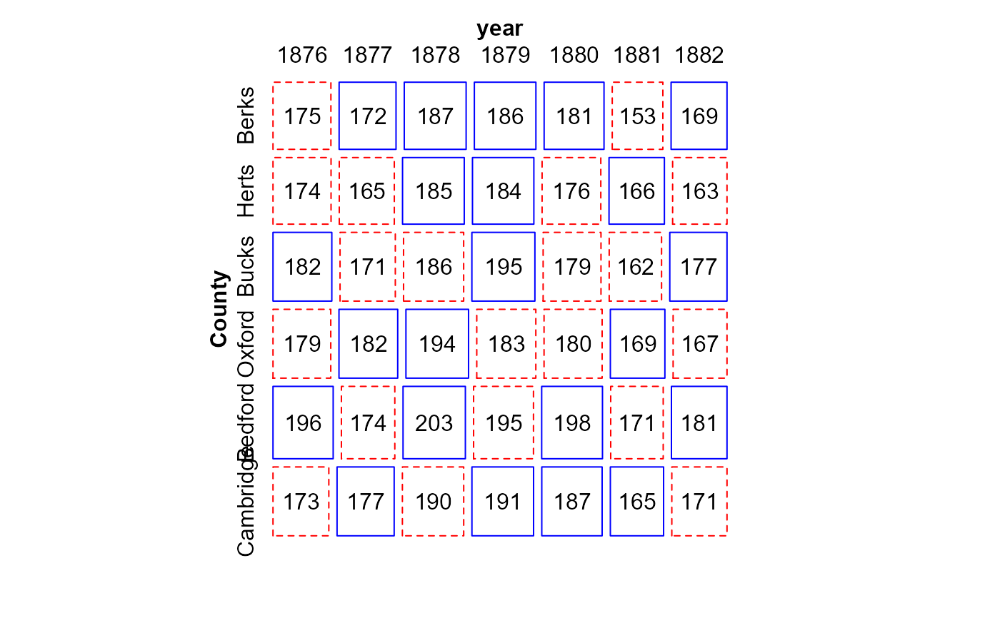

In 1885, Francis Edgeworth published a paper, On methods of ascertaining variations in the rate of births, deaths and marriages. It contained among the first examples of two-way tables, analyzed to show variation among row and column factors, in a way that Fisher would later formulate as the Analysis of Variance.
Although the data are rates per 1000, they provide a good example of a two-way ANOVA with n=1 per cell, where an additive model fits reasonably well.
Treated as frequencies, the data is also a good example of a case where the independence model fits reasonably well.
Format
A data frame with 42 observations on the following 3 variables.
Countya factor with levels
BerksHertsBucksOxfordBedfordCambridgeyearan ordered factor with levels
1876<1877<1878<1879<1880<1881<1882Freqa numeric vector, death rate per 1000 population
Source
The data were scanned from Table 5.2 in Stigler, S. M. (1999) Statistics on the Table: The History of Statistical Concepts and Methods, Harvard University Press.
Details
Edgeworth's data came from the Registrar General's report for the final
year, 1883. The Freq variable represents death rates per 1000
population in the six counties listed.
References
Edgeworth, F. Y. (1885). On Methods of Ascertaining Variations in the Rate of Births, Deaths, and Marriages. Journal of the Statistical Society of London, 48(4), 628-649. doi:10.2307/2979201
Examples
data(EdgeworthDeaths)
# fit the additive ANOVA model
library(car) # for Anova()
EDmod <- lm(Freq ~ County + year, data=EdgeworthDeaths)
Anova(EDmod)
#> Anova Table (Type II tests)
#>
#> Response: Freq
#> Sum Sq Df F value Pr(>F)
#> County 960.8 5 8.3234 5.005e-05 ***
#> year 3390.3 6 24.4761 2.665e-10 ***
#> Residuals 692.6 30
#> ---
#> Signif. codes: 0 '***' 0.001 '**' 0.01 '*' 0.05 '.' 0.1 ' ' 1
# now, consider as a two-way table of frequencies
library(vcd)
#> Loading required package: grid
library(MASS)
#>
#> Attaching package: 'MASS'
#> The following object is masked from 'package:dplyr':
#>
#> select
structable( ~ County + year, data=EdgeworthDeaths)
#> year 1876 1877 1878 1879 1880 1881 1882
#> County
#> Berks 175 172 187 186 181 153 169
#> Herts 174 165 185 184 176 166 163
#> Bucks 182 171 186 195 179 162 177
#> Oxford 179 182 194 183 180 169 167
#> Bedford 196 174 203 195 198 171 181
#> Cambridge 173 177 190 191 187 165 171
loglm( Freq ~ County + year, data=EdgeworthDeaths)
#> Call:
#> loglm(formula = Freq ~ County + year, data = EdgeworthDeaths)
#>
#> Statistics:
#> X^2 df P(> X^2)
#> Likelihood Ratio 3.853131 30 1
#> Pearson 3.850641 30 1
mosaic( ~ County + year, data=EdgeworthDeaths,
shade=TRUE, legend=FALSE, labeling=labeling_values,
gp=shading_Friendly)
